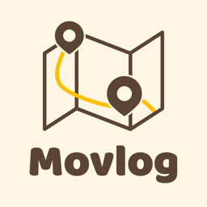
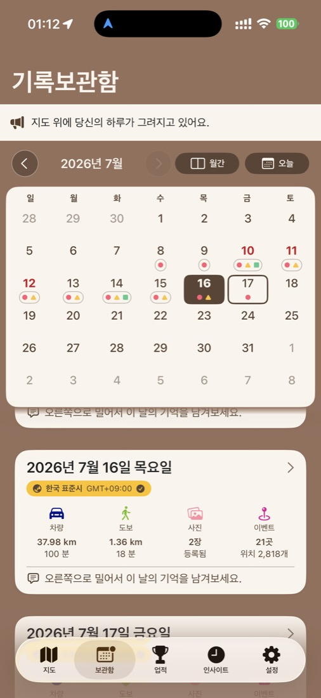
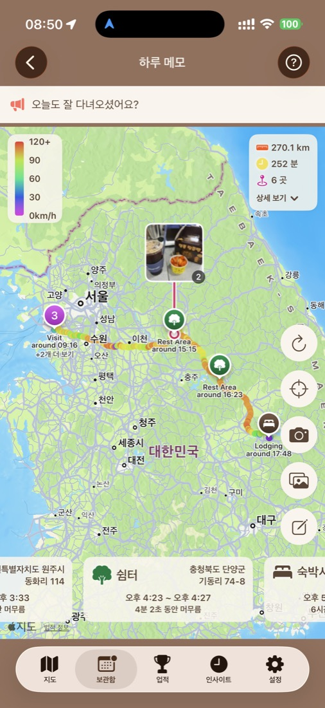
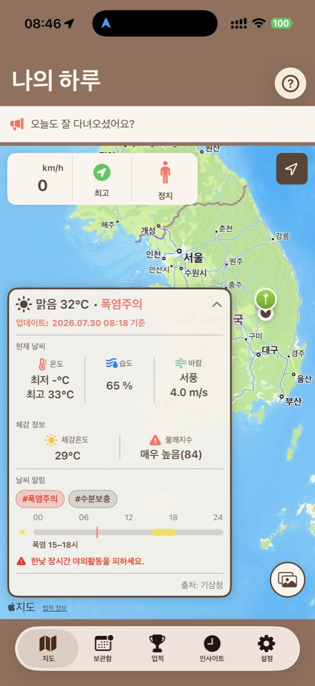

자동 이동 기록
경로, 거리, 이동 시간과 차량·도보 이동을 자동으로 기록합니다.

Movlog나의 이동 일상을 자동으로 기록하다.
Movlog는 나의 이동 일상을 조용히 기록합니다.

SEE MOVLOG IN ACTION
이동 경로부터 방문 장소, 사진과 인사이트까지. Movlog가 기록하는 하루를 직접 만나보세요.
App Store에서 다운로드↗

MOVLOG가 필요한 이유
Movlog는 하루 동안 어디를 이동했고, 어디에 머물렀는지 자동으로 기록합니다.
경로, 거리, 이동 시간과 차량·도보 이동을 자동으로 기록합니다.
방문한 장소와 머문 시간을 타임라인과 지도에서 확인합니다.
자주 간 곳과 이동 패턴을 발견하며 나의 일상을 돌아봅니다.
나의 이동 일상이 백그라운드에서 기록됩니다.
나의 경로와 장소가 타임라인이 됩니다.
나의 일상 속 패턴을 발견할 수 있습니다.
START YOUR STORY